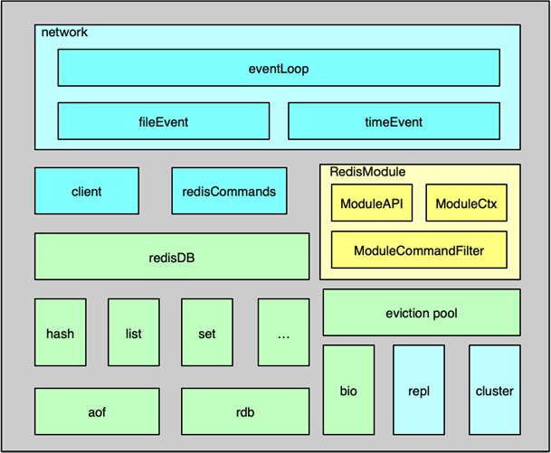

- 00 开篇寄语：缓存，你真的用对了吗？.md.html
- 01 业务数据访问性能太低怎么办？.md.html
- 02 如何根据业务来选择缓存模式和组件？.md.html
- 03 设计缓存架构时需要考量哪些因素？.md.html
- 04 缓存失效、穿透和雪崩问题怎么处理？.md.html
- 05 缓存数据不一致和并发竞争怎么处理？.md.html
- 06 Hot Key和Big Key引发的问题怎么应对？.md.html
- 07 MC为何是应用最广泛的缓存组件？.md.html
- 08 MC系统架构是如何布局的？.md.html
- 09 MC是如何使用多线程和状态机来处理请求命令的？.md.html
- 10 MC是怎么定位key的.md.html
- 11 MC如何淘汰冷key和失效key.md.html
- 12 为何MC能长期维持高性能读写？.md.html
- 13 如何完整学习MC协议及优化client访问？.md.html
- 14 大数据时代，MC如何应对新的常见问题？.md.html
- 15 如何深入理解、应用及扩展 Twemproxy？.md.html
- 16 常用的缓存组件Redis是如何运行的？.md.html
- 17 如何理解、选择并使用Redis的核心数据类型？.md.html
- 18 Redis协议的请求和响应有哪些“套路”可循？.md.html
- 19 Redis系统架构中各个处理模块是干什么的？.md.html
- 20 Redis如何处理文件事件和时间事件？.md.html
- 21 Redis读取请求数据后，如何进行协议解析和处理.md.html
- 22 怎么认识和应用Redis内部数据结构？.md.html
- 23 Redis是如何淘汰key的？.md.html
- 24 Redis崩溃后，如何进行数据恢复的？.md.html
- 25 Redis是如何处理容易超时的系统调用的？.md.html
- 26 如何大幅成倍提升Redis处理性能？.md.html
- 27 Redis是如何进行主从复制的？.md.html
- 28 如何构建一个高性能、易扩展的Redis集群？.md.html
- 29 从容应对亿级QPS访问，Redis还缺少什么？.md.html
- 30 面对海量数据，为什么无法设计出完美的分布式缓存体系？.md.html
- 31 如何设计足够可靠的分布式缓存体系，以满足大中型移动互联网系统的需要？.md.html
- 32 一个典型的分布式缓存系统是什么样的？.md.html
- 33 如何为秒杀系统设计缓存体系？.md.html
- 34 如何为海量计数场景设计缓存体系？.md.html
- 35 如何为社交feed场景设计缓存体系？.md.html
- 捐赠
19 Redis系统架构中各个处理模块是干什么的？
你好，我是你的缓存课老师陈波，欢迎进入第 19 课时“Redis 系统架构”的学习。
Redis 系统架构
通过前面的学习，相信你已经掌握了 Redis 的原理、数据类型及访问协议等内容。本课时，我将进一步分析 Redis 的系统架构，重点讲解 Redis 系统架构的事件处理机制、数据管理、功能扩展、系统扩展等内容。
事件处理机制
Redis 组件的系统架构如图所示，主要包括事件处理、数据存储及管理、用于系统扩展的主从复制/集群管理，以及为插件化功能扩展的 Module System 模块。

Redis 中的事件处理模块，采用的是作者自己开发的 ae 事件驱动模型，可以进行高效的网络 IO 读写、命令执行，以及时间事件处理。
其中，网络 IO 读写处理采用的是 IO 多路复用技术，通过对 evport、epoll、kqueue、select 等进行封装，同时监听多个 socket，并根据 socket 目前执行的任务，来为 socket 关联不同的事件处理器。
当监听端口对应的 socket 收到连接请求后，就会创建一个 client 结构，通过 client 结构来对连接状态进行管理。在请求进入时，将请求命令读取缓冲并进行解析，并存入到 client 的参数列表。
然后根据请求命令找到 对应的redisCommand ，最后根据命令协议，对请求参数进一步的解析、校验并执行。Redis 中时间事件比较简单，目前主要是执行 serverCron，来做一些统计更新、过期 key 清理、AOF 及 RDB 持久化等辅助操作。
数据管理
Redis 的内存数据都存在 redisDB 中。Redis 支持多 DB，每个 DB 都对应一个 redisDB 结构。Redis 的 8 种数据类型，每种数据类型都采用一种或多种内部数据结构进行存储。同时这些内部数据结构及数据相关的辅助信息，都以 kye/value 的格式存在 redisDB 中的各个 dict 字典中。
数据在写入 redisDB 后，这些执行的写指令还会及时追加到 AOF 中，追加的方式是先实时写入AOF 缓冲，然后按策略刷缓冲数据到文件。由于 AOF 记录每个写操作，所以一个 key 的大量中间状态也会呈现在 AOF 中，导致 AOF 冗余信息过多，因此 Redis 还设计了一个 RDB 快照操作，可以通过定期将内存里所有的数据快照落地到 RDB 文件，来以最简洁的方式记录 Redis 的所有内存数据。
Redis 进行数据读写的核心处理线程是单线程模型，为了保持整个系统的高性能，必须避免任何kennel 导致阻塞的操作。为此，Redis 增加了 BIO 线程，来处理容易导致阻塞的文件 close、fsync 等操作，确保系统处理的性能和稳定性。
在 server 端，存储内存永远是昂贵且短缺的，Redis 中，过期的 key 需要及时清理，不活跃的 key 在内存不足时也可能需要进行淘汰。为此，Redis 设计了 8 种淘汰策略，借助新引入的 eviction pool，进行高效的 key 淘汰和内存回收。
功能扩展
Redis 在 4.0 版本之后引入了 Module System 模块，可以方便使用者，在不修改核心功能的同时，进行插件化功能开发。使用者可以将新的 feature 封装成动态链接库，Redis 可以在启动时加载，也可以在运行过程中随时按需加载和启用。
在扩展模块中，开发者可以通过 RedisModule_init 初始化新模块，用 RedisModule_CreateCommand 扩展各种新模块指令，以可插拔的方式为 Redis 引入新的数据结构和访问命令。
系统扩展
Redis作者在架构设计中对系统的扩展也倾注了大量关注。在主从复制功能中，psyn 在不断的优化，不仅在 slave 闪断重连后可以进行增量复制，而且在 slave 通过主从切换成为 master 后，其他 slave 仍然可以与新晋升的 master 进行增量复制，另外，其他一些场景，如 slave 重启后，也可以进行增量复制，大大提升了主从复制的可用性。使用者可以更方便的使用主从复制，进行业务数据的读写分离，大幅提升 Redis 系统的稳定读写能力。
通过主从复制可以较好的解决 Redis 的单机读写问题，但所有写操作都集中在 master 服务器，很容易达到 Redis 的写上限，同时 Redis 的主从节点都保存了业务的所有数据，随着业务发展，很容易出现内存不够用的问题。
为此，Redis 分区无法避免。虽然业界大多采用在 client 和 proxy 端分区，但 Redis 自己也早早推出了 cluster 功能，并不断进行优化。Redis cluster 预先设定了 16384 个 slot 槽，在 Redis 集群启动时，通过手动或自动将这些 slot 分配到不同服务节点上。在进行 key 读写定位时，首先对 key 做 hash，并将 hash 值对 16383 ，做 按位与运算，确认 slot，然后确认服务节点，最后再对 对应的 Redis 节点，进行常规读写。如果 client 发送到错误的 Redis 分片，Redis 会发送重定向回复。如果业务数据大量增加，Redis 集群可以通过数据迁移，来进行在线扩容。
© 2019 - 2023 Liangliang Lee. Powered by gin and hexo-theme-book.